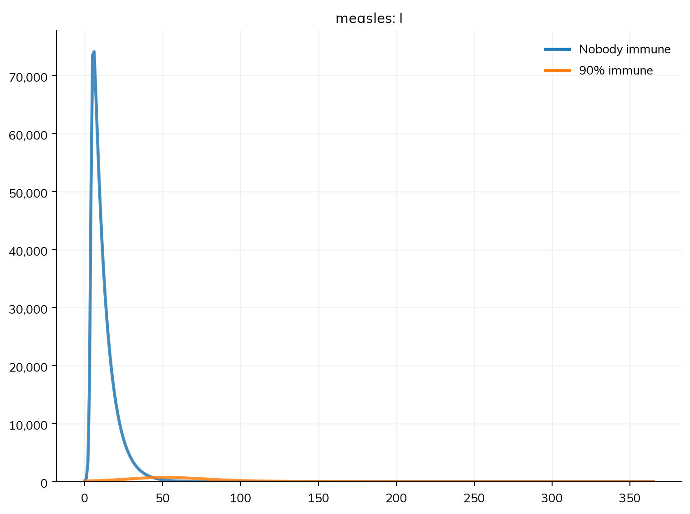
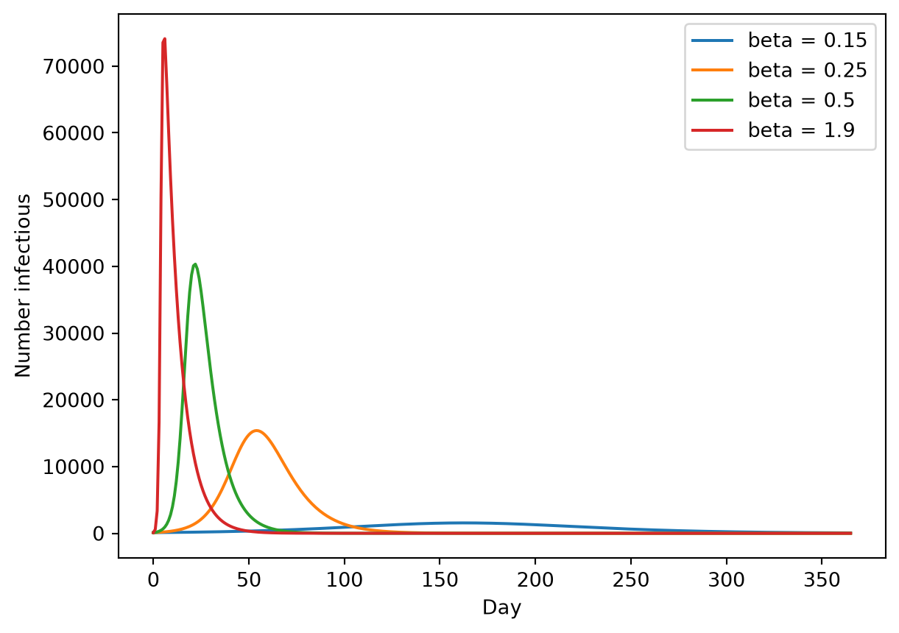
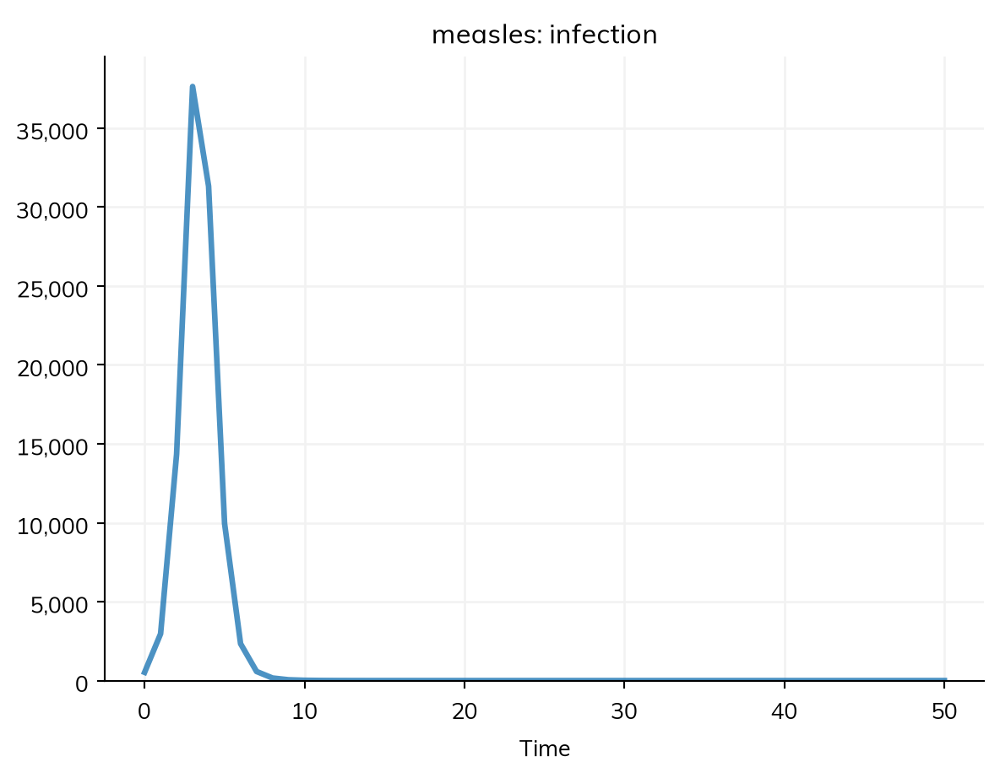
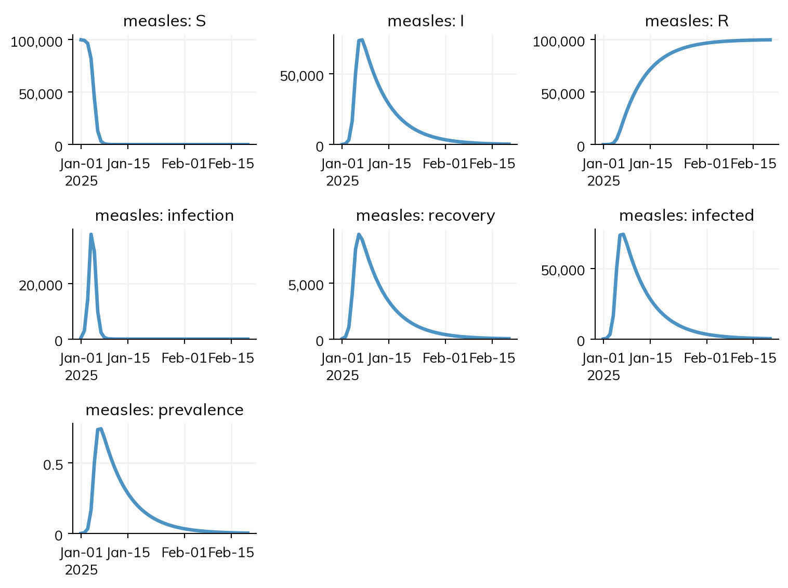

This tutorial goes through the SIR model of Tutorial 1 in more depth, to answer a question that matters for any outbreak: what decides how many people are infected?
By the end of this tutorial, you will be able to:
explain each line of the model in the terms of an SIR model;
start an outbreak in a population that is partly immune;
change a parameter and see how it changes R0 and the size of the outbreak;
get numbers out of the results, and save them;
set the units, dates, and time step of a run.
What the model says
This is the model from Tutorial 1: measles in a town of 100,000 people, with β = 1.9 per day and an infectious period of 8 days.
import starsim as ssS, I, R = ss.states('S I R')infection = S >> I @1.9*I # β = 1.9 per dayrecovery = I >> R @ ss.days(8) # Infectious for 8 days on averagemeasles = ss.Disease(infection, recovery, init_prev=0.001)sim = ss.Sim(measles, total_pop=100_000, stop=ss.days(50))sim.run()sim.plot()
Sim: measles, 100,000 people, as an ODE, days 0 to 50
measles: R0 = 15.2, with 100 infectious at the start
Done in 0.0036 s; measles: 99,900 infections; at most 74,112 infectious, on day 6
States.ss.states('S I R') makes three states: the compartments (or, as agents, a label each person carries). People start in the first state, S, unless put elsewhere.
Transitions.S >> I @ rate moves people from S to I at a per capita rate: the rate for each person in S. For an infection, this is the force of infection, λ = β I / N, which is what 1.9*I says, since a state in a rate is the fraction of people in it. Times S, it gives β S I / N infections a day. Because I is in the rate, Starsim knows the transition is a transmission, and that I is infectious.
This is frequency-dependent transmission: what matters is the fraction infectious, so a larger town has more infections but not a faster epidemic. For density-dependent transmission (as for some diseases of animals), write the number infectious, beta*I.n, so that β is per infectious person and R0 grows with the population. Diseases has these and the other ways to write a rate, such as the whole flow, S >> I @ 1.9*S*I/N, as many textbooks write it.
Durations.I >> R @ ss.days(8) gives a duration instead of a rate: 8 days in I on average, or a recovery rate of 1/8 per day, exponentially distributed as in the standard SIR model (Tutorial 3 shows other distributions).
The disease.ss.Disease puts the transitions together, with how the outbreak starts. It is named measles after its variable, as the transitions (infection, recovery) are, which names their results.
How the outbreak starts
There are three ways to say who starts where:
Argument
Meaning
init_prev=0.001
0.1% of people start infected (the initial prevalence), in the state that an infection leads to: I here, but E in a model with a latent period (Tutorial 3)
init=dict(I=0.001, R=0.9)
The fraction of people who start in each state, for any states
init_n=dict(I=10)
The number of people who start in each state
Naming the state (init or init_n) makes clear whether those introduced are already infectious. S, I, R = ss.states(S=0.099, I=0.001, R=0.9) is the same as init=dict(I=0.001, R=0.9).
Most people are immune to measles, by vaccination or earlier infection. Suppose 90% of the town is immune. To compare with a town where nobody is, run both for a year with ss.parallel():
S, I, R = ss.State(name='S'), ss.State(name='I'), ss.State(name='R')infection_explicit = ss.Transition(source=S, dest=I, rate=ss.perday(1.9)*I, name='infection')recovery_explicit = ss.Transition(source=I, dest=R, dur=ss.expon(mean=ss.days(8)), name='recovery')transitions = [infection_explicit, recovery_explicit]nobody_immune = ss.Disease(transitions=transitions, init=dict(S=0.999, I=0.001), name='measles') # The fraction of people in each state at the startsome_immune = ss.Disease(transitions=transitions, init=dict(S=0.099, I=0.001, R=0.9), name='measles')settings =dict(networks=ss.contacts(1), total_pop=100_000, start=ss.days(0), stop=ss.days(365), dt=ss.days(1), unit='day', solver='ode')msim_explicit = ss.parallel({'Nobody immune': ss.Sim(diseases=nobody_immune, **settings),'90% immune': ss.Sim(diseases=some_immune, **settings),})msim_explicit.plot('measles.I')
MultiSim: 2 runs of 2 scenarios (Nobody immune, 90% immune)
Done in 0.26 s

With 10% susceptible, each infectious person infects 15 × 0.1 ≈ 1.5 others: the reproduction number at the start, which the run prints after R0 (R = 1.51 at the start, with 10% susceptible). R0, for a fully susceptible population, is still 15.2. The outbreak grows slowly, peaking at about 700 infectious rather than 74,000, and infects about 6,000 people rather than almost everyone. An outbreak grows only when the reproduction number is above 1, so to stop measles, more than 1 − 1/R0 ≈ 93% of people must be immune: the herd immunity threshold. Try R=0.95 to see an outbreak die out.
Changing parameters
Starsim takes a disease’s parameters from its transitions: beta from the rate of infection, and dur_I (the mean time in I) from the duration of recovery:
To run with another value, give the sim pars= by name; this changes that sim only, not measles (sim.new(pars=dict(beta=0.5)) does the same from an existing sim). Here are four values of β over a year. ss.parallel() runs the sims and plots them together, as running and plotting each in turn would:
import matplotlib.pyplot as pltfor beta in [0.15, 0.25, 0.5, 1.9]: one = ss.Sim(measles, pars=dict(beta=beta), total_pop=100_000, stop=ss.days(365), verbose=0) one.run() plt.plot(one.timevec, one.results.measles.I, label='beta = '+str(beta))plt.xlabel('Day')plt.ylabel('Number infectious')plt.legend();

The lower β, the later and lower the peak. For the fraction infected in the end, read each run’s R0 and number recovered (msim.sims has the sims, in order):
The fraction infected rises steeply with R0, then levels off: 80% at an R0 of 2, almost everyone above 4. This is the classic final size relation of an SIR model, z = 1 − exp(−R0 z), for a fraction z infected. Above an R0 of about 5 the final size hardly changes, which is why measles infects almost everyone where nobody is immune. So the answer to this tutorial’s question is R0, and how many people are immune to begin with. β and the infectious period matter only through R0; they decide how fast the outbreak happens, not how big it is.
Tutorial 3 shows how to name parameters yourself, with a range of plausible values for calibration. See also Parameters in the user guide.
Sim: measles, 100,000 people, as an ODE, days 0 to 50
measles: R0 = 15.2, with 100 infectious at the start
Done in 0.0017 s; measles: 99,900 infections; at most 74,112 infectious, on day 6
A state (S, I, R) is the number of people in it at each time point (the prevalence, as a count).
A transition (infection, recovery) is the number who made it in each step: a flow. infection is the daily incidence.
Each result is a time series:
print('Peak number infectious:', round(res.I.max()))print('Total infections:', round(res.infection.sum()))print('Recovered by the end:', round(res.R[-1]))
Peak number infectious: 74112
Total infections: 99900
Recovered by the end: 99683
To count infections, sum the flow infection, not the state I, which counts each person once per day infectious. res.infection.cum is the running total (the cumulative incidence). Any result can be plotted:
res.infection.plot()

sim.to_df() gives every result as a pandas DataFrame (and res.infection.to_df() one result):
Units. Every run has a unit of time, here a day, taken from the typed values in the model (ss.days(8)). A bare number, such as β = 1.9, is in the same unit: 1.9 per day, the same as ss.perday(1.9) (and nearly ss.perweek(13.3)). Durations can be in any unit (ss.days(), ss.weeks(), ss.months(), ss.years()), converted to the model’s.
If a model mixes units, such as days and years (Tutorial 3), give its bare numbers units (ss.perday(1.9)), or give the sim its unit (ss.Sim(..., unit='day')); Time has the rules.
Start and stop.stop=ss.days(50) runs from day 0 to day 50 (as does dur=ss.days(50)). A run can also start and stop on dates:
Sim: measles, 100,000 people, as an ODE, 2025-01-01 to 2025-02-20
measles: R0 = 15.2, with 100 infectious at the start
Done in 0.0023 s; measles: 99,900 infections; at most 74,112 infectious, on 2025-01-07

Steps. A run moves in steps, dt, by default one of the unit (a day). Agents move once per step, so for agents, a step that is too long changes the results, as Tutorial 1 showed; Solvers shows how to check. See Time in the user guide for more.
By default, this keeps the model and results but leaves out the people, so the file is small; shrink=False saves everything, e.g. to continue a run later. To use the results elsewhere, save them as a table:
df = sim.to_df()df.to_csv('my-measles.csv')
Exercises
A town of 2,000 people has had no measles for many years, and 70% of its people are immune. Five people arrive with measles. Using init and init_n, model the outbreak over a year. How many people are infected? Is the reproduction number at the start above or below 1?
Using the final size relation, a model with R0 = 1.5 should infect about 58% of people. Choose β to give R0 = 1.5 with an infectious period of 8 days, run the model for long enough for the outbreak to end, and check.
Change the model to density-dependent transmission (I.n), choosing β so that R0 is still 15 in a town of 100,000. Then run it in a town of 10,000 and of 1,000,000. How does the outbreak change with the size of the town, and how does this differ from the frequency-dependent model?